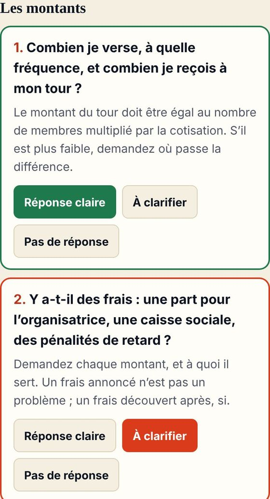
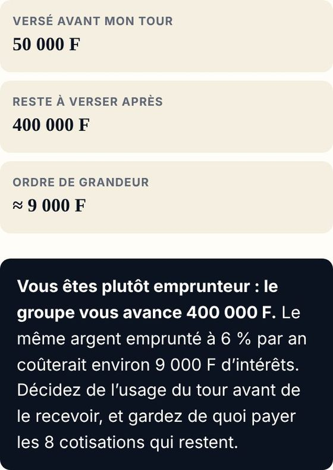
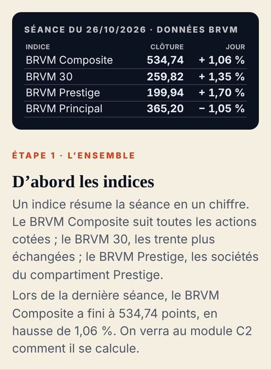
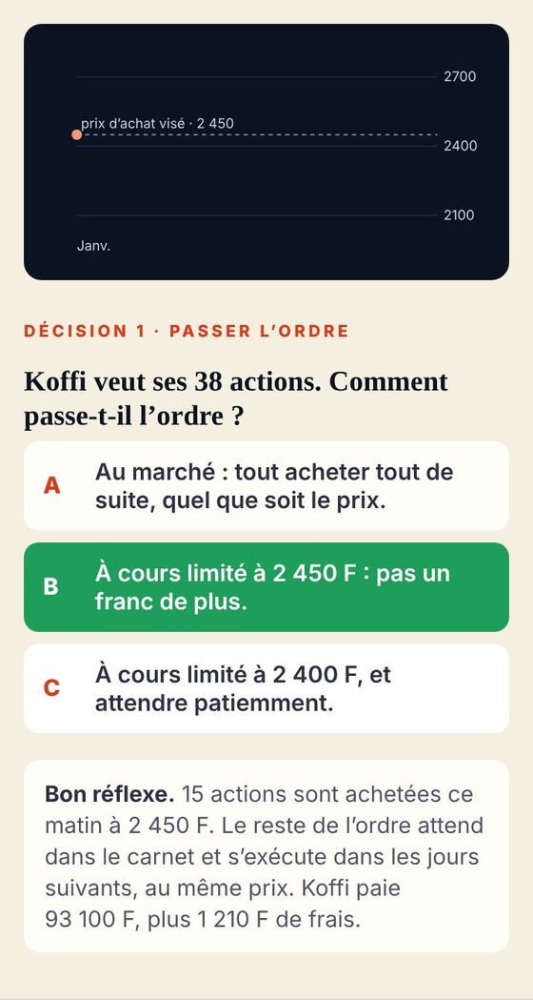
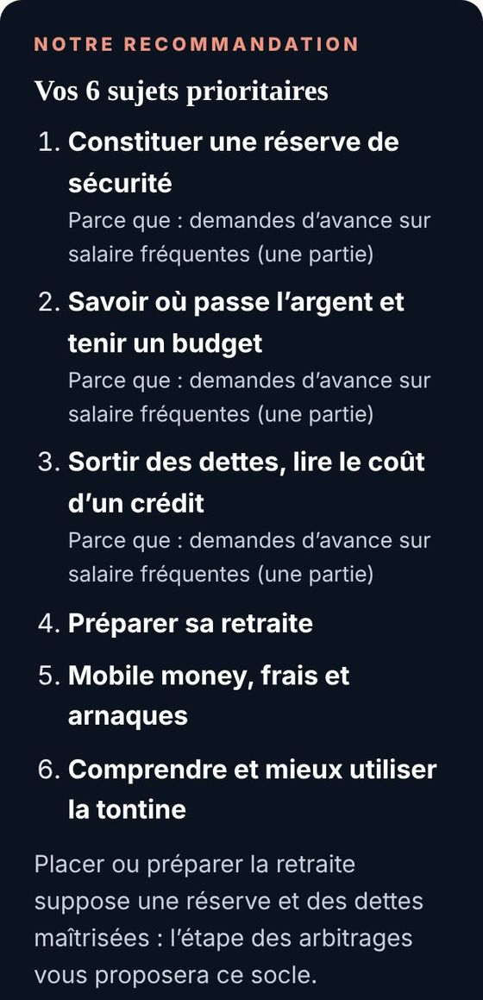
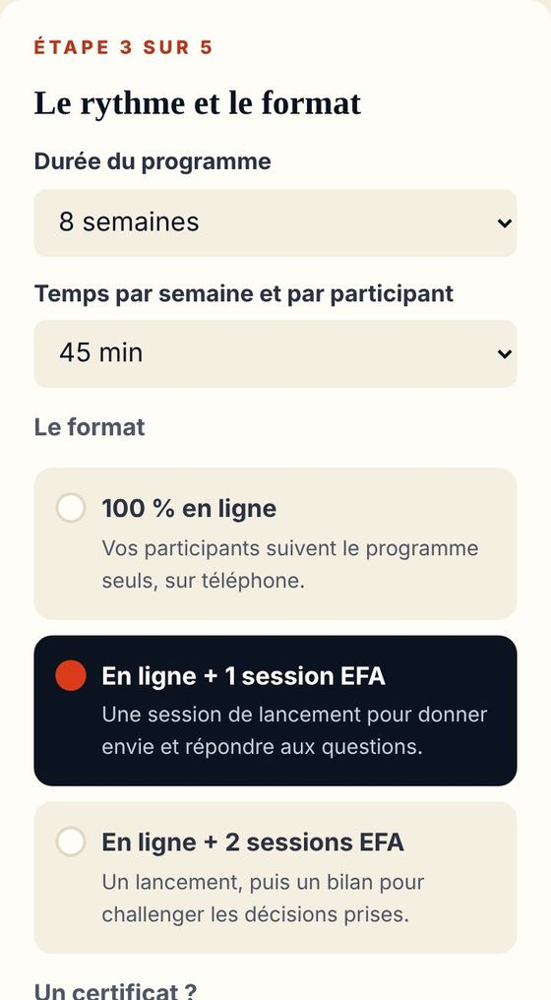
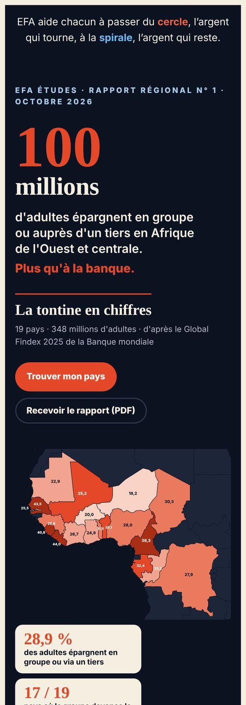
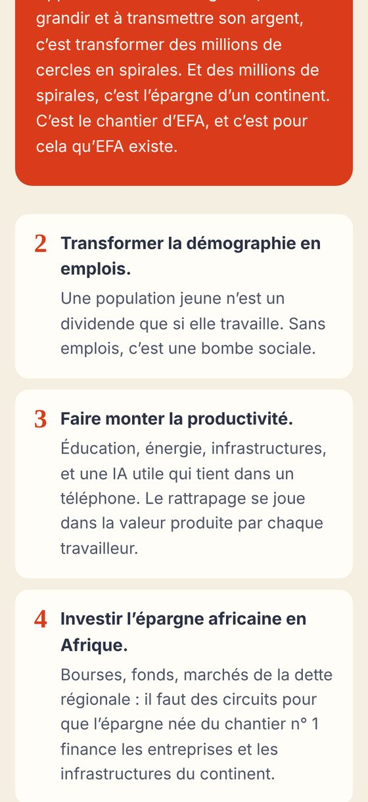

Découvrir EFA · choisissez votre démo
Une à deux minutes pour découvrir les fonctionnalités principales.
La démo est en musique : montez le son. Pour la couper, touchez le haut-parleur en haut à droite.
Entrer directement, sans démoLe salaire tombe, la tontine tourne, les proches appellent. À la fin du mois, il ne reste rien. Ce n’est pas une fatalité : ça s’apprend.
EFA · Éducation Financière Afrique
Ancrée dans les réalités africaines. On y apprend, puis on maîtrise son argent, avec un parcours.
Du cercle, l’argent qui tourne, à la spirale, l’argent qui reste.
Tout part de vos vraies questions
Étape 1
Un diagnostic gratuit en six minutes, qui compte aussi vos tontines et ce que vous donnez à vos proches.
Étape 2

Étape 3
Des simulateurs pour décider : votre budget, votre réserve, le vrai coût d’un crédit, votre retraite. Chaque mois, une part reste.
Étape 4
Un certificat local à la fin de chaque cycle, puis le certificat CEFA pour toute l’école.
Gratuit · à votre rythme · sur votre téléphone
Aller plus loin en 30 secondes :
École de la tontine · 30 secondes
Vous versez chaque mois. Mais à quel tour recevez-vous, qui garde l’argent, et que se passe-t-il si quelqu’un ne paie plus ?
Ce qu’on oublie souvent
Même cotisation, même groupe : pas le même engagement.

Sur EFA
Pour chacune : réponse claire, à clarifier, ou pas de réponse. Les points flous sont prêts à envoyer au groupe sur WhatsApp.

Le résultat
Et avant de recevoir, vous décidez la part du tour que vous garderez : une fraction qui reste, au lieu de tout voir repartir.
Gratuit · ouvert maintenant
Voir une autre démo :
École de la Bourse · 30 secondes
Une action grimpe, tout le monde en parle. Mais combien vous coûtent les frais, et que faites-vous si elle baisse demain ?
Exemple
Un chiffre isolé ne dit ni la tendance, ni le risque, ni ce qu’il vous restera après les frais.

Sur EFA
Les indices, ce qu’ils mesurent, et pourquoi une hausse du jour ne fait pas une tendance.

La simulation
Vous choisissez comment passer l’ordre de Koffi. Vous voyez ce qui s’exécute, au prix réel, frais compris. Sans risquer un franc.
Gratuit · société fictive · aucun conseil en placement
Voir une autre démo :
Pour les organisations · 30 secondes
Entreprise, coopérative, association, groupe de tontine : chacun apprend avec ses propres chiffres, qui restent à lui.
Ce que vous observez

Sur EFA
Chaque sujet recommandé dit pourquoi, et renvoie aux modules de l’école.

Le résultat
Vous suivez l’avancement du groupe : inscriptions, modules terminés, certificats. Jamais les montants, les fiches ni les réponses de chacun.
En ligne · en 5 minutes · gratuit pour composer
Voir une autre démo :
Pour les décideurs · 30 secondes
Dirigeants, élus, régulateurs, banquiers, bailleurs : la façon dont les ménages gardent leur argent se mesure, et se projette.
Afrique de l’Ouest et centrale
Une épargne que les statistiques bancaires ne comptent pas. Source : Global Findex 2025 de la Banque mondiale, calculs EFA.

EFA Études
Carte, classement et fiches pays, d’après les données de la Banque mondiale, avec chaque calcul EFA signalé.

Africa 2075
La revue de prospective d’EFA : les frontières de croissance, ce qu’elles changent pour l’Afrique, et les décisions à prendre, par type de décideur.
L’article fondateur et les études sont en accès libre
Voir une autre démo :